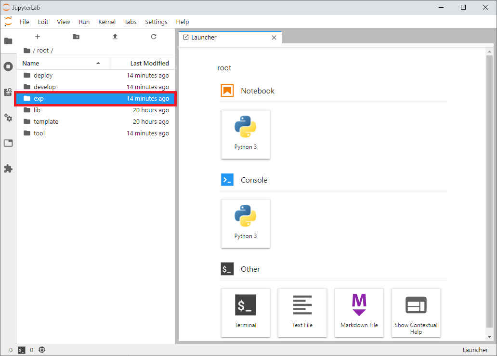

3.2. Experimentation within Jupyter Lab.¶
You can perform experiments to come up with an ideas about AIT using Jupyter Lab.
Tip
Jupyter Lab will be automatically displayed on your machine (see 3.1). But in case that you have closed it manually or you want to open it with new window, you can access “http://localhost:9888/” from your browser.
Environmental information
This Jupyter Lab’s version is 2.2.9 and internally running on tensorflow/tensorflow:2.3.0 Docker image.
For more detailed information, see:
{YourAITname}/tool/docker/jupyter/dockerfile.
3.2.1. Usage¶
Tip
To save input and output data for experimentation, we prepare the directory below. - qunomon/ait_repository/ait/{YourAITname}/exp`
You can create and run excutable notebook like normal jupyter notebook or jupyter lab.
Open the working directory by selecting root and exp from the directory pane on the left side of the window.

Then create a new Python3 notebook by selecting Python3 in the Notebook category located on the launcher tab.

Then the new notebook is opening at the right pane, and now you are able to do some experiments and implementation freely.

Tip
After completing the experiment, you will port some parts of your implementation to the “my_ait.ipynb” template shown in section 3.3 so that you can package them as an AIT. Therefore, you should design a functionality, goal and/or structure of AIT to be developed while in the experimentation phase.
In this subsection we show some guidelines that may be helpful to decide these design goals as hint for the experimentation.
Ideally, one AIT should measure one quality measure.
An AIT can take multiple “Assets” (evaluation target such as datasets or models) and parameters as an input. * The type (or container) for these pre-defined assets are called Inventory. (See section 1.3 for detailed information.)
An AIT can output multiple “Reports” (measures, graphs or images as an evaluation result).
An AIT can output multiple “Downloads” (supplemental informations or intermediate results generated with the evaluation).
For the detailed information about I/O specifications of AITs, see the AIT manifest specification.